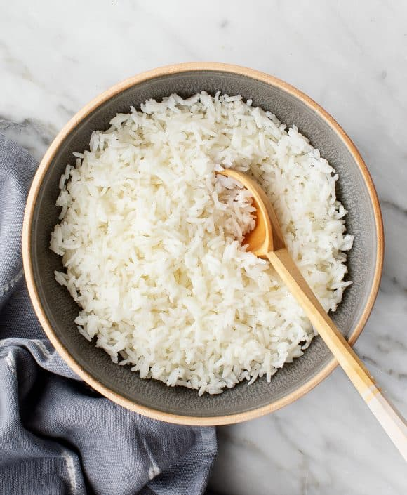

Rice!

Very easy rice recipe
This one is for those fresh college students that really know nothing about cooking!
A well made rice can be a real life saver. Add a steak or some boiled vegetables and you are almost done!
Ingredients
- Rice of your choice. It can be white rice, brown rice, black rice, etc.
- Salt
- Garlic (optional)
Steps!
- Start by boiling enough water to cook the rice. It's usually a 2 for 1 measure. So if you want to cook one cup of rice you need 2 cups of water
- If you want to, you can add some cloves for garlic into the boiling water along with the salt (you usually want 1 teaspoon of salt for every cup of rice
- Add the rice and leave it to cook
- If you see that the water is not enough to soften the rice you can add some more. Different kinds of rice may need a little bit more water
- When the water is almost gone, turn off the head and close the lid. Let the rice rest for 15 to 20 minutes
- Enjoy!